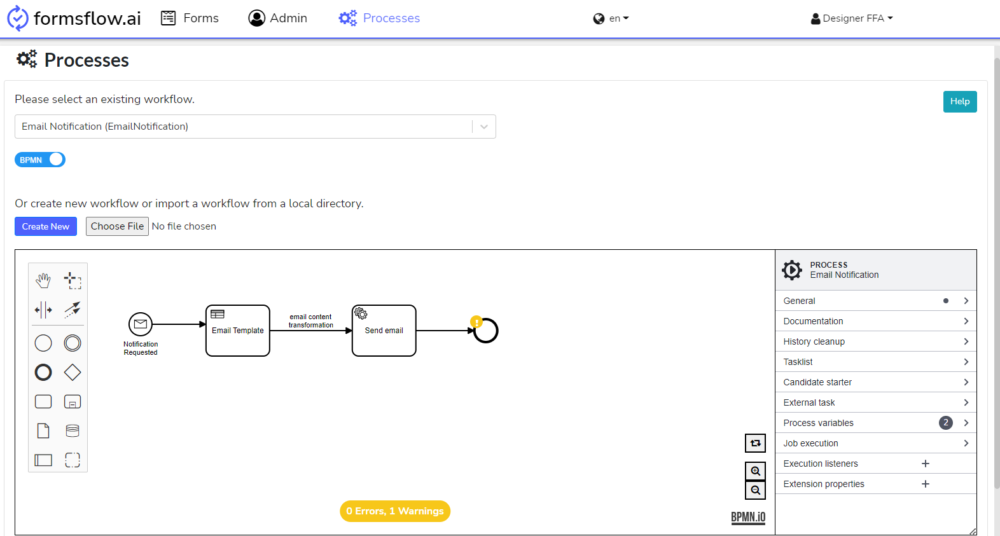
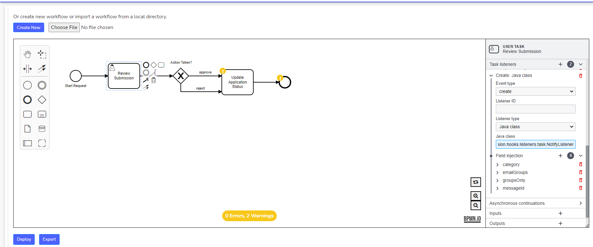
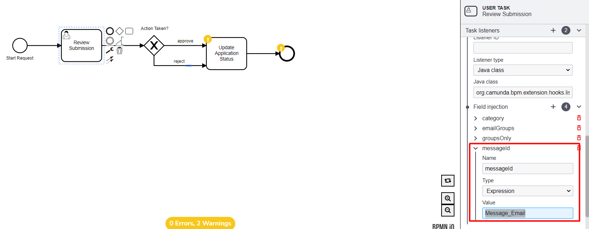
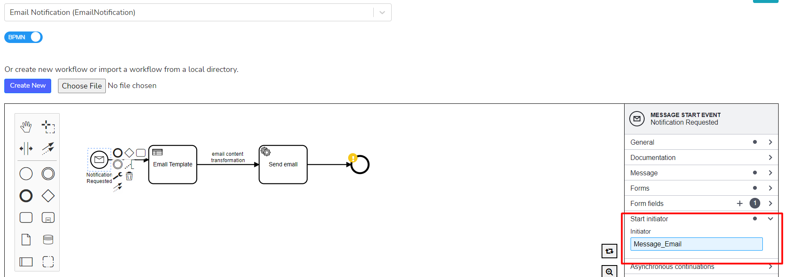
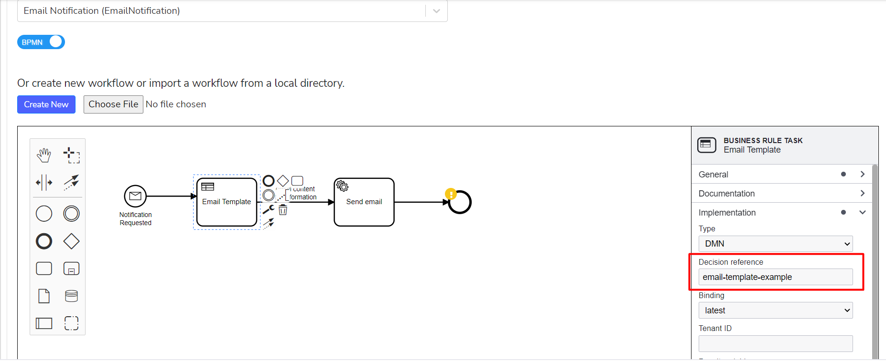
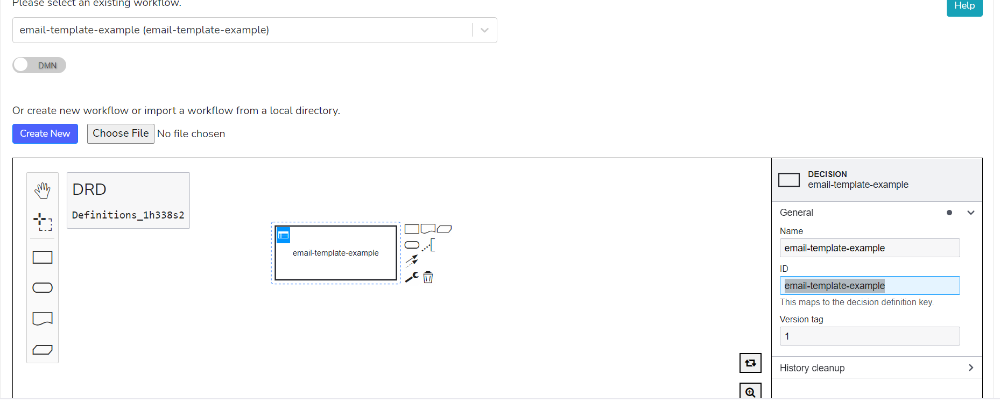
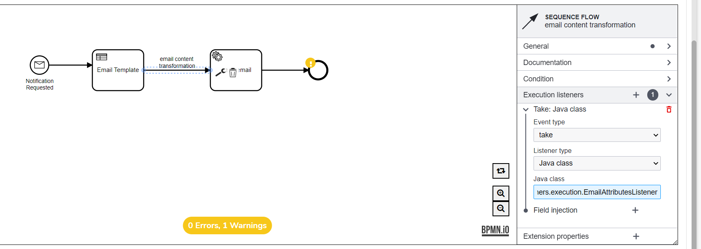
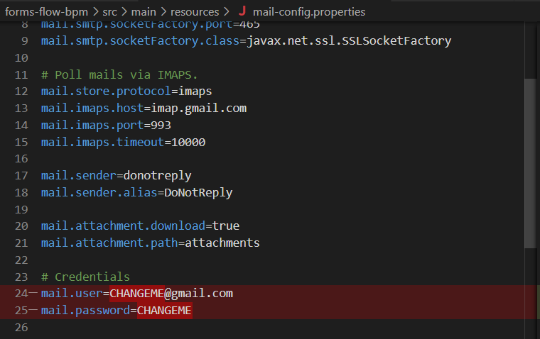

<article class="docs-article" id="section-1">
    <section class="docs-section" id="version">
        <div>
            <h1>Email Configuration</h1>
            <hr><br>
            <h3>Send an email after submitting the form</h3>
            <br>
            <p>The following steps explain how email integration is done in a workflow.</p>
            <h4>Prerequisites </h4>
            <p>The <a
                    href="https://github.com/AOT-Technologies/forms-flow-ai-examples/blob/download-file/bpm-examples/camunda/notification_email/notification_email.zip">notification_email.bpmn</a>
                and <a
                    href="https://github.com/AOT-Technologies/forms-flow-ai-examples/blob/download-file/bpm-examples/camunda/notification_email/v5.0/example-email-template.zip">
                    email-template-example.dmn</a> must be deployed to formsflow.ai.
                <br>
            <ul>
                <ol>

                    <li> Deploy the <a
                            href="https://github.com/AOT-Technologies/forms-flow-ai-examples/blob/download-file/bpm-examples/camunda/notification_email/notification_email.zip">notification_email.bpmn
                        </a> and <a
                            href="https://github.com/AOT-Technologies/forms-flow-ai-examples/blob/download-file/bpm-examples/camunda/notification_email/v5.0/example-email-template.zip">
                            email-template-example.dmn</a> using formsflow.ai process tab.</li><br>
                    <br><br>

                    <li> Configure the <a
                            href="https://aot-technologies.github.io/forms-flow-ai-doc/notify_listener.html">
                            NotifyListener</a> to the desired workflow step.
                        Add <strong> org.camunda.bpm.extension.hooks.listeners.task.NotifyListener</strong> to the
                        <strong> ‘CREATE’</strong> event of the
                        task listener. This will send an email upon task creation.
                    </li><br><br>
                    <br><br>
                    <p>Refer <a href="https://aot-technologies.github.io/forms-flow-ai-doc/notify_listener.html">
                            NotifyListener</a> and add messageId, category, groupsOnly, and emailGroups fields.</p>
                    <p>The below steps will explain how NotifyListener is linked with the
                        Workflows(notification_email.bpmn and email-template-example.dmn)</p>
                    <li>The field <strong> messageId</strong> in NotifyListener should have the value “Message_Email”,
                        as this field maps to the message event in the notification_email.bpmn. </li>
                    <br>
                    <br><br>
                    <p>
                        The below screenshot displays the ‘Message_Email’ value in the deployed notification_email.bpmn.
                    </p><br>
                    <br><br><br>
                    <li>The notification_email workflow connects with the email-template-example.dmn with the decision
                        reference value ‘email-template-example’.</li><br><br>
                    <br><br><br>
                    <p>The below screenshot displays the ‘email-template-example’ value in the
                        email-template-example.dmn.</p><br><br>
                    <br><br><br>
                    <li>EmailAttributesListener is configured between the email template and email connector, which
                        takes output data from the dmn template and transfers it to the email connector.</li><br>
                    <br><br>
                    <p>For more information about <strong> EmailAttributesListener</strong> click <a
                            href="https://aot-technologies.github.io/forms-flow-ai-doc/emailAttributes_listener.html">here</a>.
                    </p>
                    <li> Finally, update the mail-config.properties with valid email configurations.

                    </li><br>
                    <a
                        href="https://github.com/AOT-Technologies/forms-flow-ai/blob/master/forms-flow-bpm/src/main/resources/mail-config.properties">https://github.com/AOT-Technologies/forms-flow-ai/blob/master/forms-flow-bpm/src/main/resources/mail-config.properties</a>
                    <div class="br"><br></div>
                    
                </ol>
            </ul><br>
            <p>Email Configuration is completed now.</p>

        </div>
    </section>
</article>